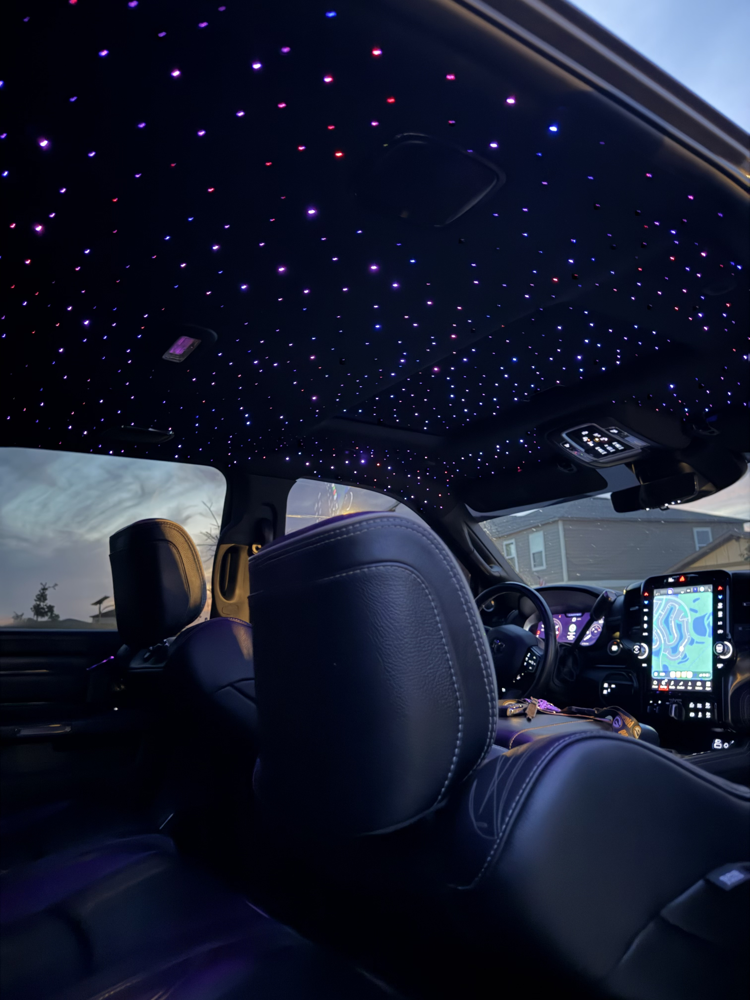

Starlight headliner
Real fiber optic, pulled through the headliner one strand at a time and trimmed flush with the fabric. Sized so the back of the roof reads as full as the front. Twinkle, shooting stars, and any color you want — including a logo or a name spelled out in the roof.
- Twinkle
- Shooting stars
- Custom shapes
- Phone control
